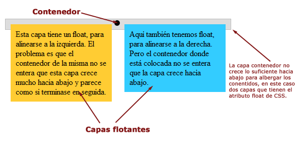
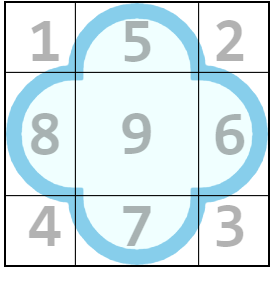
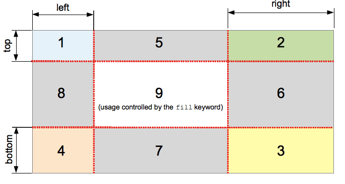

Diseño visual II:
Elementos float y clear
La propiedad float permite sacar a un elemento del flujo del documento, y posicionarlo a la izquierda o derecha de otros elementos adyacentes. Admite tres valores: right, left y none.
Un valor left significa que el elemento formará un bloque que se situará a la izquierda de los elementos adyacentes. Un valor right significa que el bloque se situará a la derecha.
Un bloque flotante debe tener definida su anchura, implícita o expresamente, ya que de lo contrario será tratado como no flotante.
La propiedad clear se utiliza conjuntamente con float para indicar si un elemento flotante permite otros elementos flotantes junto a el. Sus posible valores son none (permite elementos a ambos lados), left (no permite elementos flotantes a la izquierda), right (no permite elementos flotantes a la derecha) o both (no permite elementos flotantes a ningún lado).
Los elementos flotan horizontalmente hacia la izquierda o hacia la derecha. Un elemento float se moverá lo mas lejos que pueda hacia la izquierda o derecha del elemento contenedor. Los elementos que hay después del elemento flotante, flotarán alrededor de éste. Los elementos que hubiera antes del elemento "float" no se ven afectados. Si una imagen, por ejemplo, está flotando a la derecha, el texto que venga después flotará alrededor de ésta a la izquierda. Si se colocan varios elementos "float" uno después del otro, estos elementos flotarán uno al lado del otro si hay sitio.
Soluciones al problema de float en maquetación CSS

- Añadir un ancho a todos los elementos flotantes dentro del contenedor, si esto no funciona tenemos otras soluciones:
- Añadir al contenedor (que contiene los elementos flotantes) la propiedad overflow:hidden
- Añadir al final del contenedor, después de los elementos flotantes, lo siguiente:
<div style="clear: both"></div>
Ejemplo de un elemento float y otro clear
La propiedad overflow
La aparición de CSS 2 brindó a los diseñadores de páginas web algunos elementos que brindan una mayor versatilidad a la hora de distribuir los contenidos en el diseño. Una de las propiedades introducidas es “overflow”, que posibilita una distribución más eficaz de las capas en el diseño.
En muchas ocasiones, es necesario para mantener ciertas proporciones en el diseño, asignar a las capas (elementos DIV) determinadas dimensiones, tanto en ancho como en altura.
Cuando esto sucede, al momento de introducir los contenidos es posible que los mismos excedan las dimensiones asignadas.
Con CSS1, cuando esto sucedía, lo más frecuente era que las capas aumentaran de tamaño hasta cubrir completamente el espacio necesario para los contenidos introducidos. Usualmente, este aumento de tamaño de las capas se produce en la altura.
Para evitar este efecto, en CSS2 se introdujo el atributo “overflow”, que sirve para recortar los contenidos que exceden el tamaño de las capas.
Pero también sirve para que, en caso de que se desee que el contenido en exceso sea visible, se agreguen a la capa barras de desplazamiento que permitan que el usuario acceda al resto del contenido y la capa mantenga el tamaño deseado.
La propiedad display
Establece el tipo de caja generada por un elemento y puede tomar los siguientes valores (los más importantes):
- display: none -> Hace invisible la caja
- display: inline -> Muestra la caja como un elemento en linea
- display: block -> Muestra la caja como un elemento de bloque
- display: inline-block -> Muestra la caja como un elemento en linea pero se puede aplicar valores de width y height
CSS display property - W3Schools
Degradados
Los degradados son uno de los efectos más utilizados en la web. Anteriormente, era necesario el uso de imágenes para lograr este efecto, pero ahora es realmente fácil de hacer usando CSS.
Los degradados son configurados como fondos, por lo que podemos usar las propiedades background o background-image para declararlos.
Tenemos dos tipos de degradados: degradados lineales y degradados radiales.
Bodes redondeados y sombras
Durante muchos años los diseñadores han sufrido intentando lograr el efecto de esquinas redondeadas en las cajas de sus páginas web, eran esa clase de cosas que nos hacía pensar: “debería ser fácil hacerlo”.
Gracias a la propiedad border-radius de CSS3, ahora podemos hacerlo de forma muy sencilla
Bordes a partir de imágenes
Para entender mejor la propiedad border-image-slice
La propiedad border-image utiliza una imagen para trazar el borde de un elemento HTML y es el método abreviado de:
border-image-source, border-image-slice, border-image-width, border-image-outset, y border-image-repeat.


- Las zonas 1-4 son regiones de esquina . Cada uno se usa una sola vez para formar las esquinas de la imagen del borde final.
- Las zonas 5-8 son regiones de borde . Estos se repiten, escalan o modifican de otro modo en la imagen del borde final para que coincida con las dimensiones del elemento.
- La zona 9 es la región media . Se descarta de manera predeterminada, pero se usa como una imagen de fondo si se establece el fill la palabra clave .
- Las propiedades border-image-repeat , border-image-width y border-image-outset determinan cómo se usan estas regiones para formar la imagen de borde final.
La propiedad border-image-slice se puede especificar utilizando de uno a cuatro valores
para representar la posición de cada segmento de imagen. Los valores negativos no son válidos; Los valores superiores a su dimensión correspondiente se fijan al 100% . - Cuando se especifica una posición, crea los cuatro sectores a la misma distancia de sus respectivos lados.
- Cuando se especifican dos posiciones, el primer valor crea sectores medidos desde arriba y abajo , el segundo crea sectores medidos desde la izquierda y la derecha .
- Cuando se especifican tres posiciones, el primer valor crea un segmento medido desde la parte superior , el segundo crea sectores medidos desde la izquierda y la derecha , el tercero crea un sector medido desde la parte inferior .
- Cuando se especifican cuatro posiciones, crean cortes medidos desde la parte superior , derecha , inferior e izquierda en ese orden (en sentido horario).
- El valor de fill opcional , si se usa, se puede colocar en cualquier lugar de la declaración.
#border-image-slice:
El diagrama anterior ilustra la ubicación de cada región.
Los posibles valores de la propiedad border-image-slice son:de uno a cuatro valores numéricos (porcentajes o números sin unidades): se interpretan como píxeles en imágenes de mapa de bits o como coordenadas en imágenes vectoriales.
- stretch: Después de dibujar las esquinas, los segmentos 5 - 8 serán estirados para llenar el espacio correspondiente entre las esquinas.
- repeat: Después de dibujar las esquinas, los segmentos 5 - 8 serán repetidos para llenar el espacio correspondiente entre las esquinas. Si no encajan a la perfección los fragmentos de imagen pueden ser recortados para que quepan.
- round: Después de dibujar las esquinas, los segmentos 5 - 8 serán repetidos para llenar el espacio correspondiente entre las esquinas. Los fragmentos de imagen podrán ser estirados para encajar a la perfección en el espacio disponible;
- space: La normativa dice que los fragmentos de imagen serán espaciados para encajar a la perfección en el espacio disponible. La verdad es que esto todavía no funciona en ningún navegador.
#border-image-repeat:
- Por defecto el borde que utiliza la imagen esta pintado dentro de los limites de la caja. La propiedad border-image-outset amplía la área donde poder dibujar el borde.
- Puede tomar valores numéricos por ejemplo border-image-outset:4. En este caso la área dentro de cual es posible dibujar los fragmentos de imagen será ampliada a 4 veces el valor especificado de la anchura del borde.
- También puede tomar valores en px, em, etc... Por ejemplo border-image-outset:20px.En este caso la área dentro de cual es posible dibujar los fragmentos de imagen será ampliada en 20px.
- Exactamente como en el caso de border-width puede tomar 1, 2, 3 o 4 valores.

Ejemplos de como especificar varios valores en una sola instrucción
/* source | slice */ border-image: linear-gradient(red, blue) 27; /* source | slice | repeat */ border-image: url("/images/border.png") 27 space; /* source | slice | width */ border-image: linear-gradient(red, blue) 27 / 35px; /* source | slice | width | outset | repeat */ border-image: url("/images/border.png") 27 23 / 50px 30px / 1rem round space;
#border-image-outset